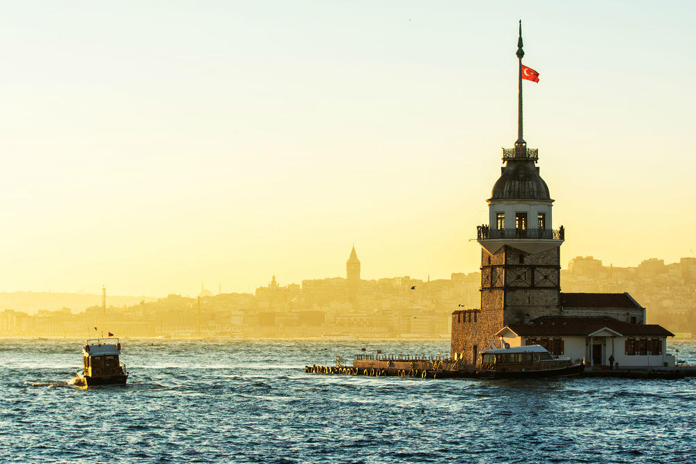
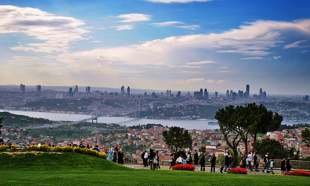
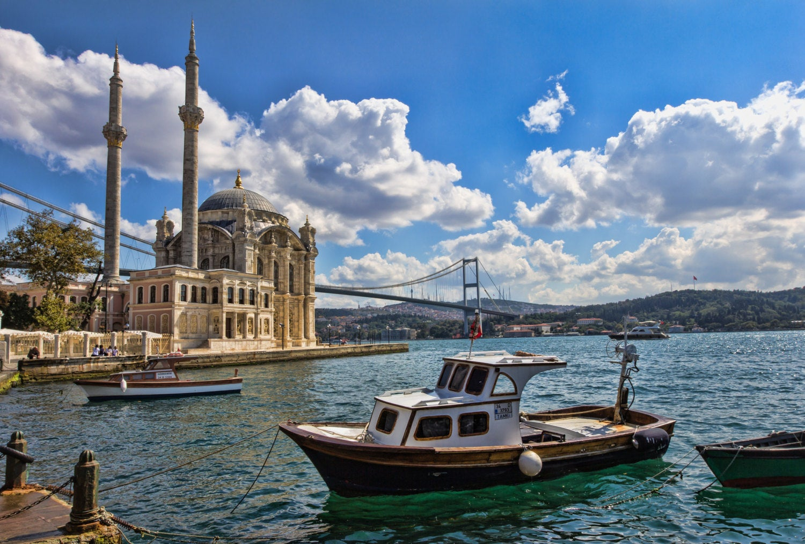

My Top 3 Favorite Places in Istanbul
Maiden's Tower
It's located at the south end of the Bosphorus and the entrance to the Sea of Marmara. The Maiden's Tower is a beautiful landmark sitting in the middle of this iconic waterway. You can take a boat to get the tower. Once you get there, you can see 360 degree view of the Bosphorus and the old city. The view is amazing, especially at night. There is a classy restaurant, and a cafeteria-bar inside of the tower. There is also a museum to the brief history of the Maiden’s Tower.
The Best-Known Legend of Maiden's Tower
The story derived from the tower is about the emperor's daughter. According to the story, the Byzantine emperor had a daughter. The happiness of the emperor who announced the birthday of the princess to the birth was not very long. Because the oldest of the scholars, the mighty ruler said that his daughter would be bitten by a snake before he turned 18 and would die. Then the emperor repaired the structure in the middle of the sea and placed his daughter in the tower. However, the princess, who lived in a safe environment for a while, could not escape the fate and was bitten by a snake who came to the island in a fruit basket.

Çamlıca Hill
Çamlıca Hill is located within the borders of Üsküdar district, on the Anatolian side of Istanbul, near the first suspension bridge. Çamlıca, a place with two hills overlooking the Bosphorus and the Marmara Sea, is one of the most favored promenades in Istanbul, and also one of the highest and most charming places in the city. It's divided into two sections as "Büyük Çamlıca" and "Kücük Çamlıca", meaning "Big" and "Small". Büyük Çamlıca is 267 meters above sea level and the other one is 228 meters.
Çamlıca got its name from the pine trees in the area (Çam means Pine in Turkish). First settlers turned the entire region into a pine forest, which survived not only the Roman period but also the Byzantines. According to the book of Turkish historian Ismail Hakki Konyali, in ancient times both Camlica hills were covered with pine trees so thick that no sunlight could shine through them. There were also wildflowers in all colors and poppies.
Today, With its traditional snack "Gozleme", ice cream and corn on the cob, with its kiosks, fountains, tea and coffee shops and restaurants operated by the Metropolitan Municipality of Istanbul, surrounded by historic trees, great flora, colorful flowers and tulips, and with a cool breeze, Camlica attracts many local and foreign visitors enjoying the magnificent panorama of the Bosphorus and the city.

Ortaköy Mosque
Ortakoy Mosque (Mecidiye Mosque), making up the most distinctive scenes of Istanbul with the Bosphorus Bridge, stands out with its exquisite decorations in Ortakoy. It is a beautifully designed mosque on the shore of the Bosphorus that magically rises from the water.Ortakoy Mosque is considered as the jewel of Bosphorus due to its location and architecture.
The splendid view of Bosphorus can be seen from its broad windows. Several masterful examples of Turkish calligraphy hanged on the interior walls of the Mosque. These handicrafts are executed by Sultan Abdulmecid himself, who was also an ingenious calligrapher.
Ortakoy literally means “the village in the middle” due to its unique location on the European Bosphorus shore. Ortakoy square is a popular meeting and strolling place for the locals. It provides a cozy atmosphere with its lovely boutiques, waterfront cafés and restaurants.
